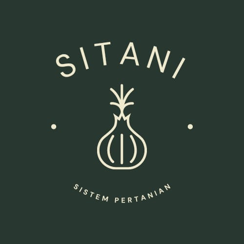

SiTani
SiTani merupakan sistem media berbagi informasi yang dibutuhkan oleh petani, antara lain Berita pertanian, sarana untuk memasarkan produk pertanian,
Info Bakul
Menyediakan profil para bakul dari berbagai daerah yang bisa dihubungi
Kunjungi Info Bakul

Sejarah SiTani
SiTani adalah Sistem Pertanian berbasis web yang Pertama kali dibuat pada 22 Februari 2021 dan dikembangkan oleh beberapa mahasiswa Politeknik Harapan Bersama kota Tegal prodi DIV Teknik Informatika